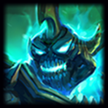
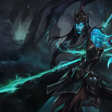
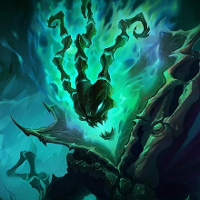
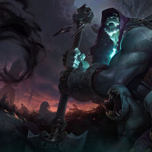

Las Islas de la Sombra
Conocidas antaño como Las Islas Bendecidas, sucumbieron a una maldicion echada por su propio rey, conocido como El Rey Arruinado, en un intento de revivir a su esposa. Ahora este archipielago esta gobernado por un cruel carcelero que con su linterna apresa a todas las almas incautas que se acercan.
Algunos campeones importantes de las Islas de la Sombra son:
|  |  |  |  |
|---|